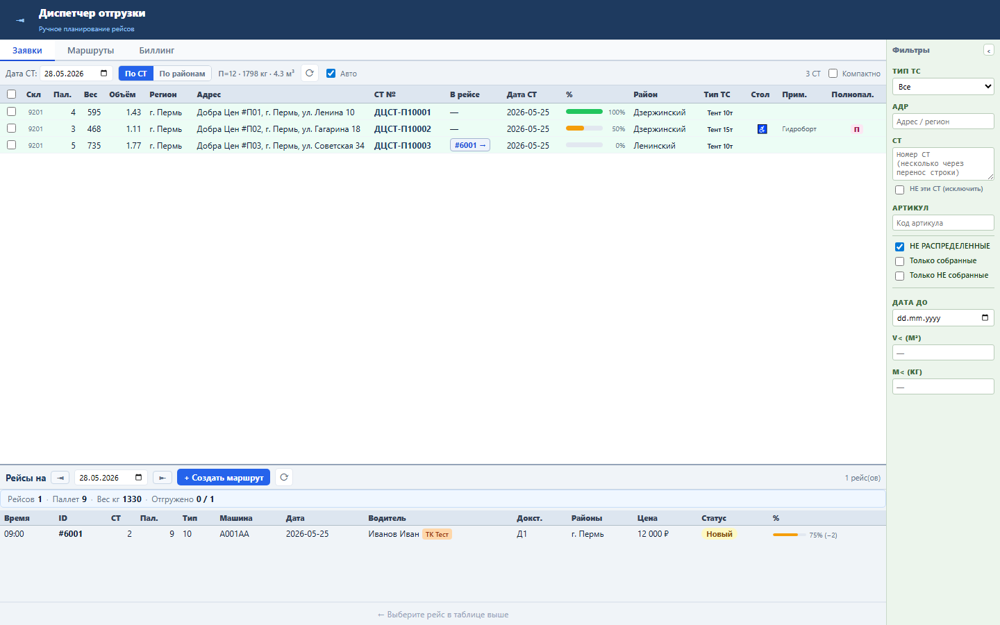
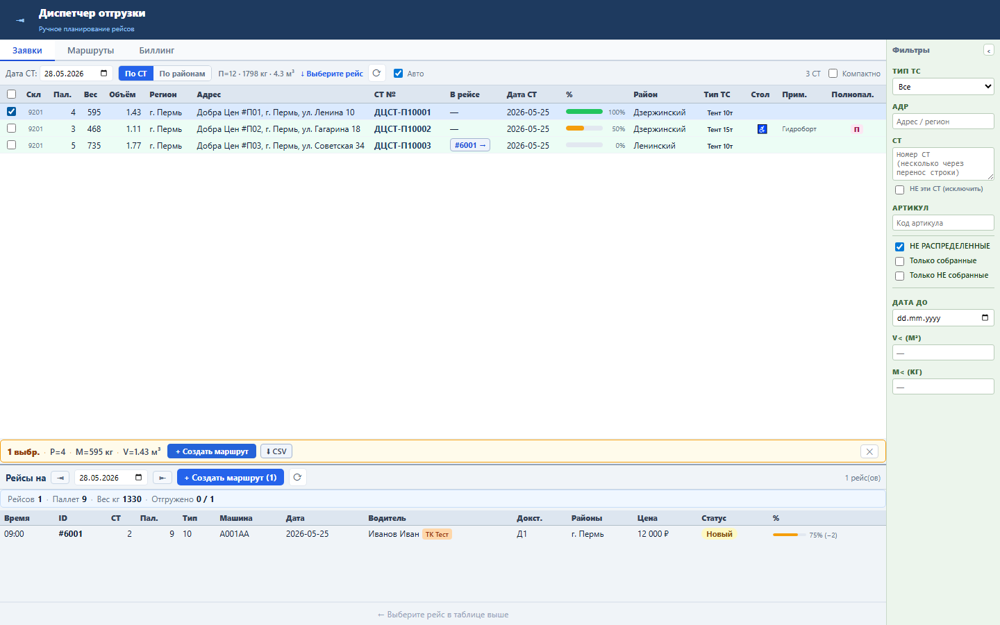
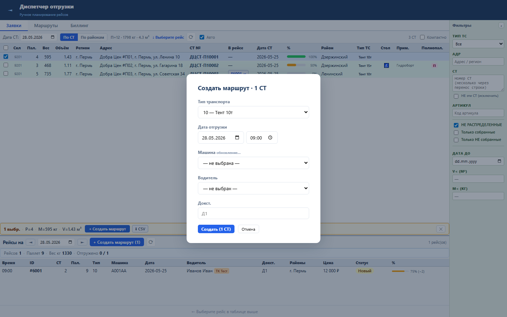
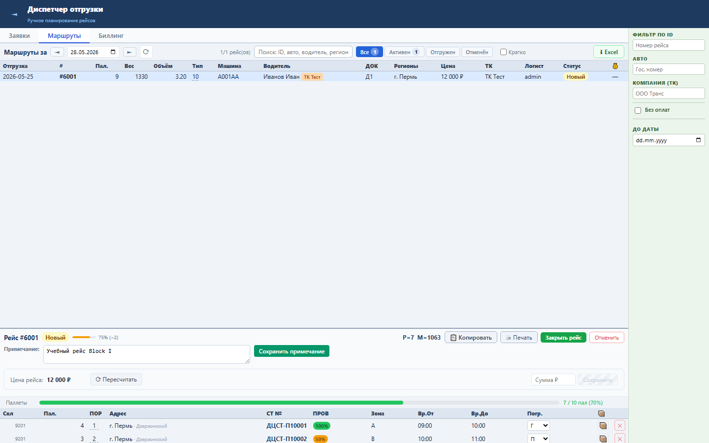
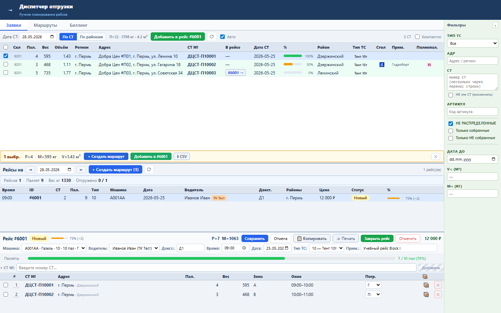
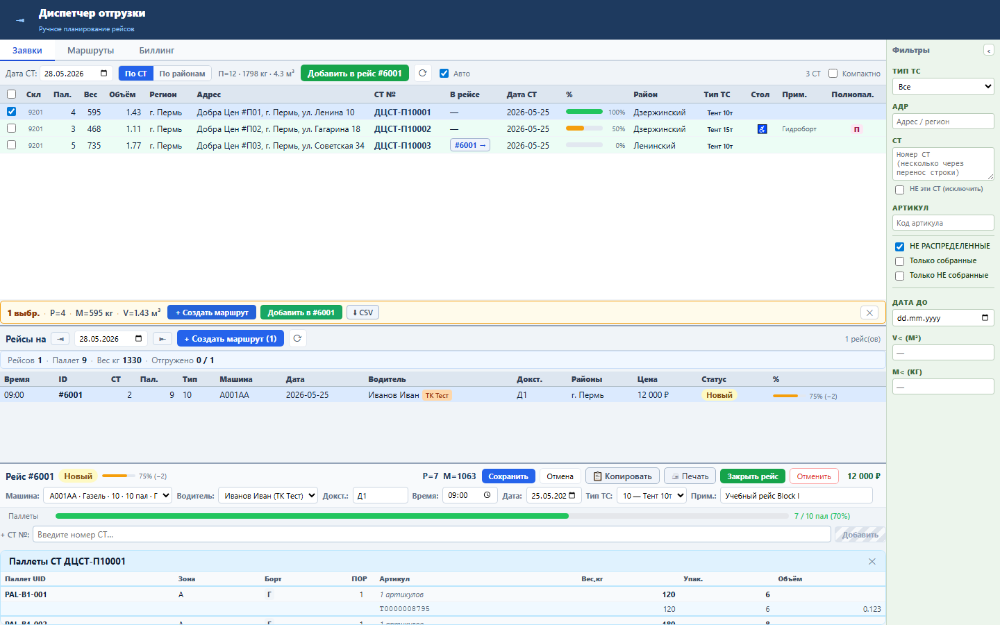

Зачем этот блок
Block I заменяет ежедневную работу диспетчера из legacy WinForms: увидеть свободные СТ, отфильтровать и выделить их, создать рейс, проверить состав, отредактировать реквизиты, управлять порядком/типом погрузки и открыть паллетную детализацию.
Вход
СТ из сборки, адреса, паллеты, вес, объём, готовность, требования к ТС.
СТ из сборки, адреса, паллеты, вес, объём, готовность, требования к ТС.
Процесс
Выделение СТ, создание/редактирование рейса, назначение/снятие СТ, закрытие рейса.
Выделение СТ, создание/редактирование рейса, назначение/снятие СТ, закрытие рейса.
Результат
Рейс с составом, реквизитами, порядком объезда, типом погрузки и контролем готовности.
Рейс с составом, реквизитами, порядком объезда, типом погрузки и контролем готовности.
Структура данных
| Объект | Основные поля | Источник |
|---|---|---|
| СТ | ST_NUMBER, ADDR, REGION, RAION, PALLETS_COUNT, WEIGHT_KG, VOLUME_M3, VERIFY_PERC, TRANSTASK_ID | RRL_SBORKA_PALLETS, RRL_SBORKA_PALLET_ROWS, RRL_ADDR |
| Рейс | ID, TRANSTYPE, TRANSPORT, VODITEL_ID, DOCK, SHIPMENT_DATE, READY_PERC, PAY_ORDER_ID | RRL_TRANSPORT_TASK, RRL_TR_VEHICLE, RRL_TR_VODITEL |
| Паллеты СТ | PALLET_UID, ZONE, LOAD_TYPE, ORD, ARTICUL, ORDER_WEIGHT, PACK_COUNT | RRL_SBORKA_PALLETS, RRL_SBORKA_PALLET_ROWS |
Как работать






Бизнес-процессы
- Планирование дня: выбрать дату, отфильтровать свободные СТ, проверить готовность и требования к машине.
- Формирование рейса: выделить группу СТ, выбрать тип ТС/водителя/док, создать рейс и проверить, что СТ ушли в состав.
- Оперативное редактирование: поправить реквизиты рейса, порядок объезда и тип погрузки, снять ошибочно назначенную СТ.
- Контроль перед отгрузкой: проверить readiness, состав, паллеты, адреса и требования гидроборта/стола.
- Закрытие: закрыть рейс как отгруженный; пустой рейс или рейс с бизнес-ошибкой не должен закрываться молча.
Результат проверки
Block I Sprint 1-6 прошёл gate: functional tests 78 passed, UI smoke Sprint 1-6 passed, load NFR Sprint 4-6 passed, frontend build passed.